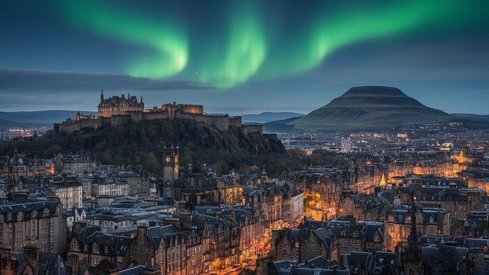
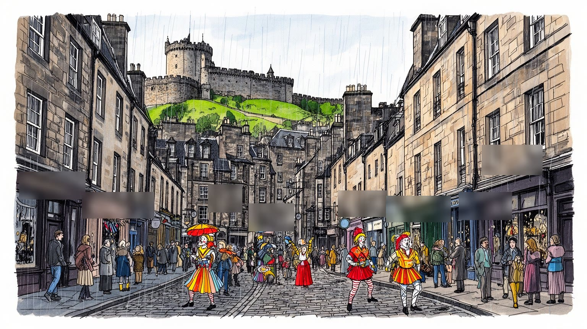
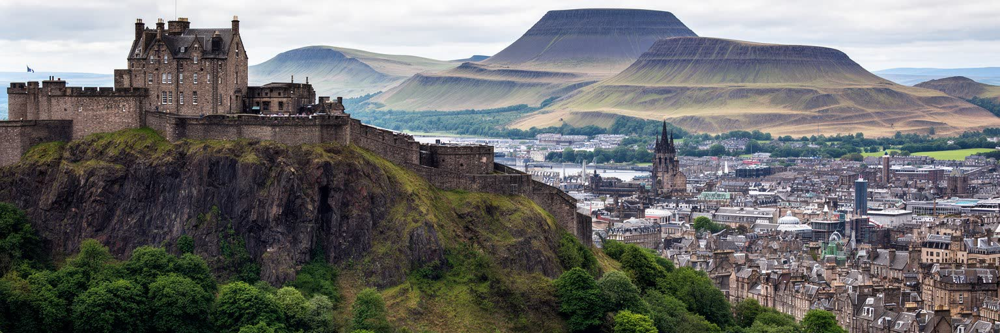
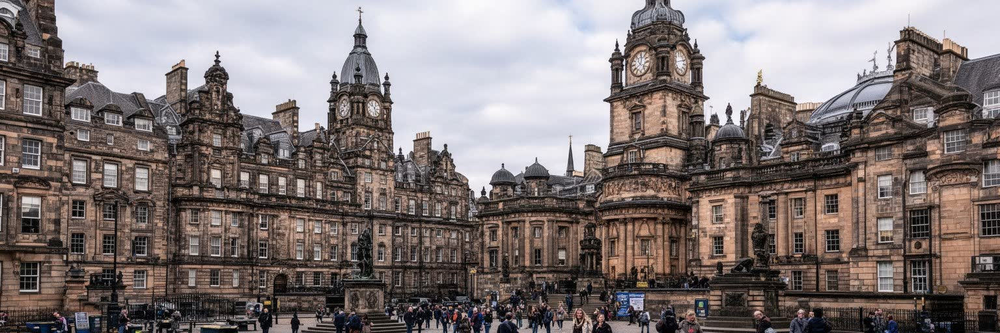
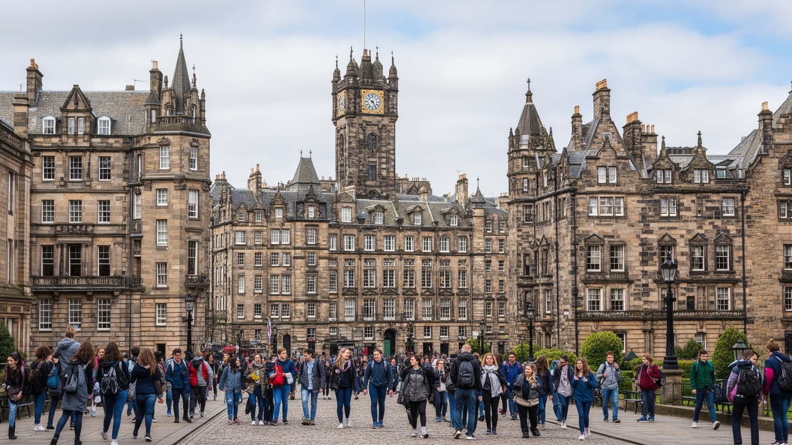
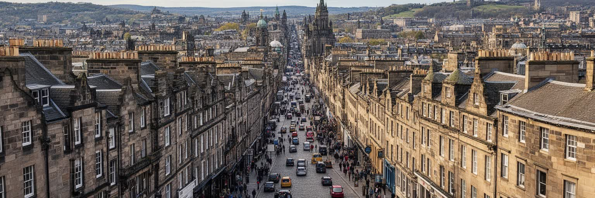
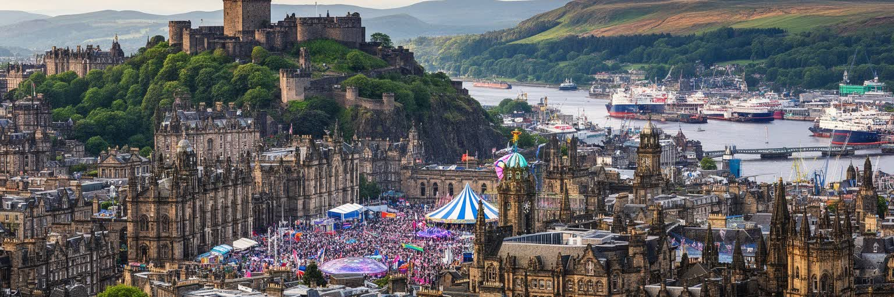
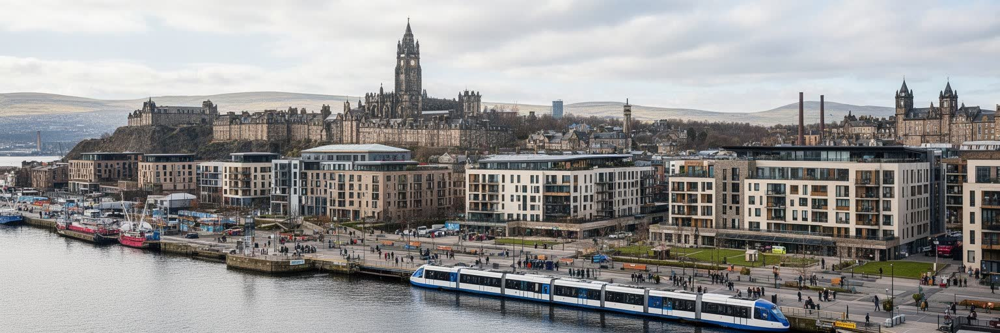

地政学
エディンバラはスコットランド議会、政府、裁判所、王室儀礼が集まる首都です。英国国家の中の自治、独立論、北海と欧州への視線、ロンドンとの距離が、議事堂、裁判所、城、駅前の街路に重なる都市です。選挙も響く。

🇬🇧 イギリス / スコットランド / World City Atlas
火山岩の城、谷をまたぐ旧市街と新市街、スコットランド議会、金融街、大学、文学、祭典が、雨風の多い丘の街で重なります。
都市の骨格
エディンバラは、城が載る火山岩、谷筋を走る鉄道、啓蒙期の新市街、港町リース、議会と大学が近い距離で結びつく都市です。観光の美しさの背後に、政治、住宅、労働、祭典運営の現実があります。

エディンバラはスコットランド議会、政府、裁判所、王室儀礼が集まる首都です。英国国家の中の自治、独立論、北海と欧州への視線、ロンドンとの距離が、議事堂、裁判所、城、駅前の街路に重なる都市です。選挙も響く。
金融、資産運用、行政、大学、医療、出版、観光、フェスティバル産業が雇用を作ります。専門職の高い生産性の隣で、ホテル、清掃、警備、飲食、舞台運営、介護の働き手が繁忙期の都市を支えます。家賃差も見えます。
宗教改革、長老派教会、カトリック、移民の礼拝所、文学、哲学、博物館、劇場、パブの会話が都市文化を厚くします。祭典の華やかさは、旧市街の記憶と大学の知識、地域の祈りに支えられます。冬の静けさも大切です。
観光客は城、ロイヤルマイル、新市街、アーサーズ・シート、リースを歩きますが、住民には家賃、短期貸し、雨風、坂道、混雑、学生住宅、公共交通が切実です。美しい街は生活の調整で保たれます。近所の店も大切です。

エディンバラを読む入口は、城が立つ岩山と、そこから東へ伸びる旧市街の尾根です。火山活動と氷河が作った硬い岩と谷は、防衛、王権、街路、鉄道、景観保護を決めてきました。城の西側と北側は急に落ち、プリンシズ・ストリート・ガーデンズの谷にはかつて湖があり、現在は鉄道と公園が新市街と旧市街を分けています。南側には大学、学校、住宅地、東にはホリールード宮殿とアーサーズ・シートがあり、朝は濡れた石畳を通学する子ども、犬を連れた高齢者、坂を上がる配達員が交差します。坂道、階段、閉じた小路、橋、眺望点が多いのは、観光向けの演出ではなく、地形に合わせて生活してきた結果です。丘の美しさは、強い風、雨、冬の暗さ、歩行の負担も伴います。地形を意識すると、城が象徴にとどまらず、都市の視線、移動、権力の配置を支配していることが分かります。新しいホテルや学生住宅が増える時も、眺望線、石造建築、谷の公共空間をどう守るかが重要になります。霧の日にはバグパイプの音やバスのブレーキ音が石壁に反響し、同じ街路が要塞、住宅地、舞台のように見え方を変えます。市場へ向かう買い物袋や濡れた羊毛の匂いも、地形の記憶に重なります。景観は岩と街路と制度が折り重なった公共財であり、混雑管理、防災、歩きやすさを考える基礎でもあります。生活もあります。

エディンバラはスコットランドの首都であり、英国の中で自治と国家性をめぐる議論が日常的に見える都市です。ホリールードのスコットランド議会、政府、司法の中枢、王室公邸のホリールード宮殿、エディンバラ城の軍事儀礼が、徒歩圏に集まります。ここで扱われる教育、医療、交通、住宅、文化、気候、税制の判断は、ハイランド、島嶼部、グラスゴー、アバディーン、農村、港町へ広く届きます。独立をめぐる議論も、抽象的な憲法論だけでなく、街頭の集会、議会前の生中継、大学の討論、パブでの会話、地域紙や放送局の報道として現れます。選挙の夜には開票速報と近所の会話が、同じ画面と街路を揺らします。ロンドンとの関係、欧州との距離、北海エネルギー、防衛、移民、王室への感情が、首都の象徴空間に重なります。城、議会、裁判所、官庁、報道機関、抗議の広場は、スコットランドが自分をどう統治し、英国の中でどの位置を取るかを問い続ける場所です。政治は建物の中だけでなく、雨の中で待つ記者、社会科見学の児童、議事堂を案内する職員、デモの列にも宿ります。首都機能は安定した雇用と専門職を生む一方、政策都市としての緊張も街に持ち込みます。観光の街路と政治の街路が同じ石畳で重なるため、制度への期待と失望が住民の声として届きやすい点も、この都市の特徴です。

エディンバラの経済は、観光都市の印象だけでは説明できません。金融、保険、資産運用、年金、法律、会計、行政、大学、研究、医療、データ、出版、文化産業が高い生産性を作り、スコットランド経済の中でも大きな役割を担っています。新市街のオフィス、ヘイマーケット周辺の開発、大学の研究拠点、病院、スタートアップ支援、公共機関は、古い石造景観の内側で現代的な知識労働を動かします。一方で、数字に出にくい経済も厚くあります。朝市の屋台、ロイヤルマイルの大道芸、土産物店、古本屋、カフェの仕込み、ウイスキー店、ホテルの客室係、舞台設営、清掃、警備、介護、配達が都市を支えています。専門職の賃金と住宅需要は家賃を押し上げ、サービス労働者、学生、若い家族には住みにくさを生みます。フェスティバルの月には臨時雇用、長時間労働、宿泊費の高騰、公共空間の混雑が一気に強まります。金融と知識経済が世界に接続する強さを持続させるには、働く人が市内や近郊に住み続けられる住宅、交通、保育、技能訓練が欠かせません。昼食時のサンドイッチ店、夕方のスーパー、週末のファーマーズマーケットも、賃金と生活費の関係を映します。雨の日の客足も収入を左右します。高い付加価値と街路の小商い、専門職と現場労働を同じ都市経済として読むことが、エディンバラを理解する基礎です。

エディンバラの旧市街と新市街は、都市計画の対比を歩いて読める場所です。旧市街は城からホリールードへ下るロイヤルマイルを軸に、高密度の石造建物、細い小路、階段、地下空間、教会、市場、住居が重なってきました。土地が限られた尾根上では建物が上へ伸び、貧富の差も同じ街区の上下や裏表に現れました。対して新市街は十八世紀以降、広い通り、広場、整ったファサード、視線の軸を持つ計画都市として造られ、啓蒙期の秩序と商業の自信を示しました。現在、旧市街と新市街は世界遺産の中心ですが、保存は単に石を残すことではありません。ホテル、短期貸し、土産物店、観光バス、学生住宅、夜間経済が増えるほど、住民の買い物、静けさ、学校、医療、地域コミュニティは圧迫されます。新市街の美しい街並みも、オフィス化や高級住宅化によって日常生活の密度が変わります。エディンバラを遺産都市として読むには、建築様式の美しさだけでなく、誰がその街区に住み、誰が働き、誰が管理費を負担し、どの店が残れるのかを見る必要があります。旧市街と新市街の価値は、観光写真ではなく、歴史的な空間が現代の生活に耐えながら使われ続けることにあります。保存と生活の均衡が崩れれば、街は美しい舞台装置になってしまいます。修復の費用、消防安全、断熱改修も、古い建物を暮らしの場として保つための現実的な焦点です。

エディンバラは文学と学問の都市として強い記憶を持ちます。大学、医学教育、法学、哲学、出版、図書館、書店、新聞、サロン、カフェ、パブの議論が、スコットランド啓蒙の時代から都市の知的な密度を作ってきました。デイヴィッド・ヒューム、アダム・スミス、ウォルター・スコット、ロバート・ルイス・スティーヴンソン、アーサー・コナン・ドイルの名は観光案内にも現れますが、重要なのは偉人の列挙だけではありません。小学校から大学までの教育、図書館の読み聞かせ、地域紙、ラジオ、ポッドキャスト、学生新聞、劇評、書店員の推薦も、知の都市を日々更新しています。都市の坂道、墓地、裁判所、大学の中庭、印刷業、貸本屋、劇場、労働者の読み書き、女性や移民の語りも文学都市を形作ります。現在の国際ブックフェスティバル、図書館、大学出版、創作教育は、この記憶を公共文化へつなげています。一方で、文学都市のブランドは家賃や観光消費とも結びつき、作家、学生、小さな書店が中心部に居続ける難しさも生みます。学問都市の姿は、留学生、研究者、医療従事者、図書館員、編集者、翻訳者、清掃や食堂の職員を含む多くの労働に支えられます。試験期のカフェや夜の自習室も、街の季節感を変えます。本と思想は石造の街並みを飾る記号ではなく、子どもから高齢者までが学び直せる公共性を広げる力です。

エディンバラの夏は、国際フェスティバル、フリンジ、ブックフェスティバル、ミリタリー・タトゥーなどによって、都市全体が巨大な舞台になります。劇場だけでなく、教会、大学、パブ、地下室、仮設会場、広場、路上が上演空間になり、コメディ、演劇、クラシック、フォーク、ジャズ、クラブイベントが夜遅くまで響きます。石段に貼られたポスター、雨に濡れたチラシ、揚げ物の匂い、バグパイプと低音の混ざる路地が、祭典期の感覚を作ります。この季節は名声と収入を高めますが、宿泊費の高騰、短期貸しの拡大、交通混雑、騒音、廃棄物、住民の疲労も生みます。華やかさの背後には、照明、音響、警備、清掃、チケット係、通訳、配達、飲食、宿泊施設の働き手がいます。子ども向け公演や学校の発表も多く、家族の夏の予定にも深く入り込みます。若いアーティストや小規模劇団にとっては、参加費、会場費、滞在費が大きな負担になり、成功の機会と搾取の危うさが隣り合います。祭典都市として読むなら、観客の熱気だけでなく、誰が場所を借りられ、誰が低賃金や無償に近い労働を引き受け、住民の睡眠や通学路がどこまで守られるかを見る必要があります。祭典は文化力を示す一方、公共空間を一時的に商品化する装置でもあります。長く続けるには、芸術家、働き手、住民、観光客の利益を調整する制度が必要です。
エディンバラの宗教を読むには、スコットランド宗教改革、長老派教会、王権との緊張、旧市街の教会、墓地、説教、教育の歴史を避けて通れません。セント・ジャイルズ大聖堂は観光名所でもあり、宗教と市民政治が交差してきた場所です。グレイフライアーズの墓地、カノンゲートの教会、大学周辺の礼拝堂は、信仰、記憶、共同体の層を残します。現代の都市には、カトリック、聖公会、イスラム、ヒンドゥー、シク、仏教、ユダヤ教、無宗教の住民も暮らし、移民の礼拝所や食のルール、葬送、学校行事、地域支援が日常を形作ります。宗教施設は、礼拝だけでなく、孤独な高齢者、難民、学生、低所得者への相談や食料支援の拠点にもなります。観光客にとって教会は美しい建築に見えますが、住民にとっては結婚、葬儀、音楽、地域集会、冬の避難場所に関わる公共空間です。エディンバラの信仰は、過去の対立の記憶を持ちながら、多文化都市としての調整を求められています。宗教を歴史の装飾として扱うのではなく、誰が祈り、誰が支援を受け、どの共同体が街の中で場所を確保しているかを見ることが大切です。鐘の音、金曜礼拝、合唱、墓地の静けさは、観光の喧騒と同じ都市のリズムです。祭典の期間にも、礼拝や葬送や地域支援は止まらず、静かな共同体の時間が街を支えます。学生や新住民が相談先を見つける入口にもなります。

エディンバラの暮らしは、絵葉書のような石造街区の内側で、住宅費と観光圧に強く左右されます。中心部には学生、専門職、観光客、短期滞在者が集まり、旧市街や新市街では短期貸し、ホテル化、投資用住宅が住民の選択肢を狭めてきました。大学と金融の雇用は活力を与えますが、賃貸需要を押し上げ、若い家族、低賃金労働者、アーティスト、高齢者には住み続けにくい条件を作ります。郊外や近隣自治体へ移れば家賃は下がる場合がありますが、通勤時間、交通費、夜間の移動、保育、介護の負担が増えます。坂道と雨風は日常の移動にも影響し、歩ける美しい街は、車椅子利用者、高齢者、ベビーカー、夜勤者には必ずしも使いやすいとは限りません。住民にとって重要なのは、食品店、薬局、学校、診療所、図書館、公園、手頃なカフェ、地域の集会場所が残ることです。放課後のクラブ、祖父母の送迎、冬の暖房費、週末のスポーツ練習、犬の散歩、雨具を乾かす玄関の匂いまで、都市の質は細部に表れます。近所のニュースを交わす店先や診療所の待合室も、孤立を防ぐ場所です。住宅問題は、文化都市の人気が生活都市を圧迫する典型例です。魅力を守るには、景観規制だけでなく、手頃な住宅、短期貸しの管理、公共交通、地域サービスを一体で考える必要があります。住める人が限られれば、街の記憶も薄くなります。

エディンバラは内陸の城下町だけではなく、リースという港町との関係で発展してきました。リースは長く貿易、造船、倉庫、移民、労働者住宅、海軍、魚市場の記憶を持ち、現在は再開発、レストラン、住宅、港湾、クルーズ、トラム延伸によって中心部と結び直されています。港は観光の水辺でもあり、物資、雇用、海との歴史を支える場所です。ウォーター・オブ・リース沿いの散歩道、ウェイヴァリー駅、ヘイマーケット、空港、バス、トラム、自転車道は、丘の多い都市の日常移動を支えます。鉄道はグラスゴー、ロンドン、北イングランド、スコットランド各地と首都をつなぎ、空港は観光客、留学生、金融関係者、政府関係者を運びます。移動の地図にはスポーツも重なります。マレーフィールドのラグビー代表戦、タインカッスルのハーツ、イースター・ロードのハイバーニアンは、試合日のバス、パブ、屋台、家族連れ、警備の流れを変えます。しかし便利さは均等ではありません。郊外の住宅地や低所得地区では、バスの頻度、夜間移動、運賃、乗り換えが生活の選択肢を左右します。観光シーズンには中心部の歩道や駅が混み、通勤や買い物にも影響します。城、ロイヤルマイル、リースの港、駅の谷、空港道路、トラムの停留所、坂を上がるバスを同じ都市骨格として見ると、移動の線が仕事、観光、教育、応援文化を結び、時に分けることが分かります。
エディンバラ観光の中心は、城、ロイヤルマイル、ホリールード、旧市街、新市街、国立博物館、スコットランド国立美術館、カールトン・ヒル、アーサーズ・シート、リースの水辺です。歩いて多くを巡れる密度は大きな魅力ですが、その密度が混雑と摩耗を生みます。観光客はタータンの店、ウイスキーの試飲、ハギスやスコッチパイ、ショートブレッド、魚介の食事、ヴィクトリア・ストリートの買い物、週末のマーケットを楽しみますが、同じ場所は住民の通勤、通学、買い出しの道でもあります。石畳、階段、歴史的建物、博物館、教会、墓地、眺望点は、多くの訪問者を受け入れながら修復と管理を必要とします。観光は雇用と税収を生み、知名度を高めますが、住民にとっては騒音、短期貸し、路上混雑、価格上昇、ごみ、地域の店の変化として現れることがあります。城の写真を撮る人の横で、学校へ行く子ども、店で働く人、夜勤明けの住民、清掃員、配達員が同じ道を使っています。遺産都市の価値は名所の数だけでなく、歴史の層が日常と重なる点にあります。観光は消費の速度を上げるだけでなく、地域の商い、公共交通、修復費用、住民の静けさを支える仕組みと結びつく必要があります。雨の日の博物館、屋内市場、小さな食料品店、地元客の多いパブも、観光を分散させる重要な受け皿です。

エディンバラは、人口規模だけなら巨大都市ではありません。しかし、城の岩山、世界遺産の旧市街と新市街、スコットランド議会、金融と資産運用、大学、文学、祭典、宗教改革の記憶、港町リース、丘と海への視線が、近い距離で重なります。美しい都市として消費されやすい一方、その美しさは住宅費、観光圧、短期貸し、労働条件、雨風の中の移動、遺産管理によって常に試されています。首都という立場は自治と国家性をめぐる議論を街路へ引き寄せ、祭典都市の性格は世界中の表現者と観客を住民の日常空間へ招き入れます。金融と大学は高い生産性を作りますが、ホテル、介護、配達、清掃、市場、舞台、パブ、店舗の現場労働が見えなくなれば、文化都市としての厚みは失われます。城からの眺め、新市街の整った通り、リースの港、議会前の広場、夏の劇場、冬の暗い坂道、マレーフィールドの歓声、フォークセッションの夜、雨上がりの揚げ物と麦芽の匂いを同じ地図に置くと、都市は過去の展示物ではなく、政治と生活がせめぎ合う現在の首都として見えてきます。エディンバラを読むことは、誰が住み、働き、祈り、学び、応援し、上演し、年を重ね、子どもを育てているのかを問うことです。遺産を守る力は、住民が都市を使い続けられる条件と切り離せません。観光の成功を暮らしの質へ戻せるかが、石の街の未来を左右します。